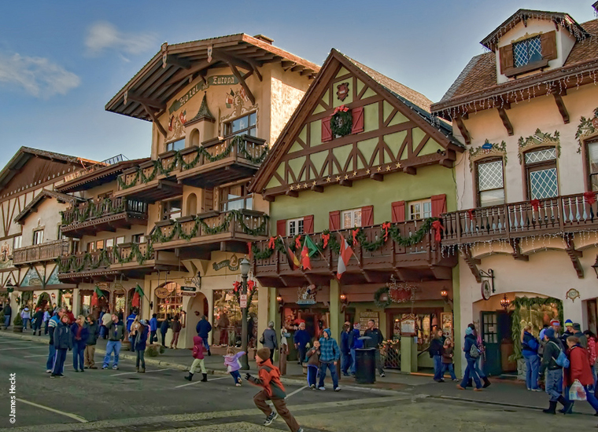
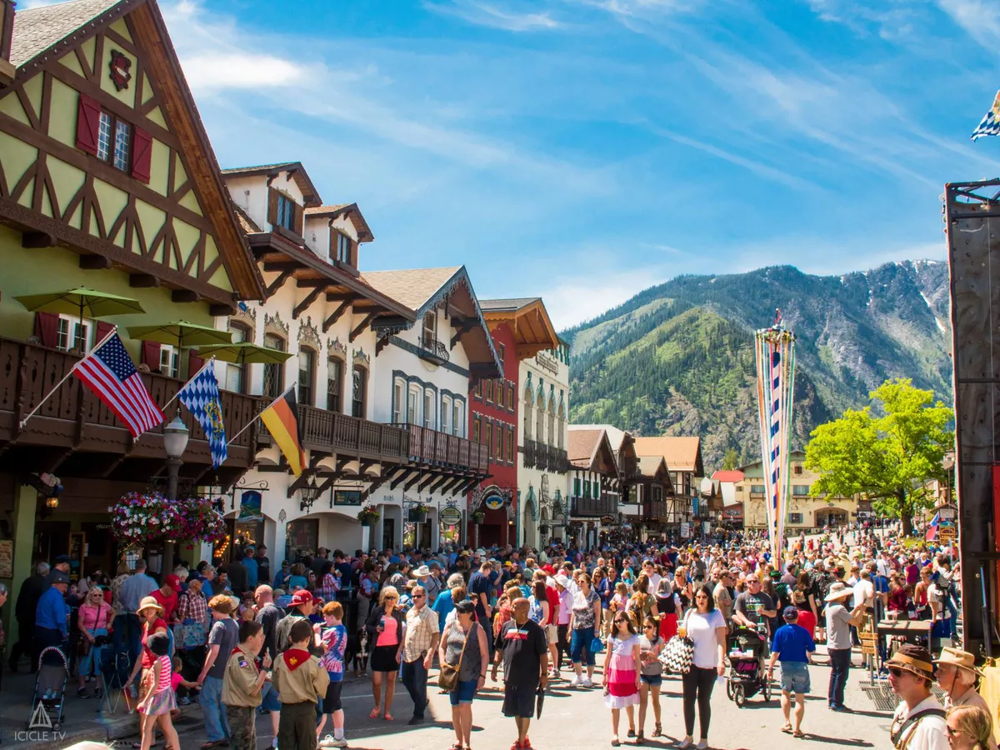
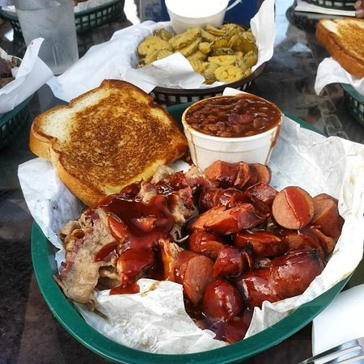

fall pnw guide
leavenworth
leavenworth, a small town modeled after a bavarian villiage, is the perfect destination for a taste into german culture. located in chelan, we recommend visiting during oktoberfest, where you can experience food and festivities.
click on the images below to get a closer view!

leavenworth town square

leavenworth festivities

pretzels and beer

sausage, beans and toast